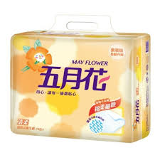
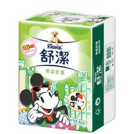

衛生紙品牌
- 五月花 
- 倍潔雅
- 舒潔 
五月花一直是消費者心中第一的家用品牌 我們學習媽媽的精神，用柔軟的心創造產品，更相信創新是來自於細節的用心，五月花期盼能給每位最愛，更創新、更專業、好品質的家庭用紙。

倍潔雅品牌精神原意是希望提供給追求更好生活品質的消費者，更加潔淨優雅的生活。這個精神也是根源於我們的核心價值「品質」與「永續」。倍潔雅可以普遍深入消費者家庭生活的主要原因在於，各系列家用紙品，從人工植林、製紙，領先業界從源頭開始用心層層把關，紙質特色在於不過多添加、純淨自然、低紙粉。各系列更配合了不同紙質，希望給消費者不同的舒適感受。倍潔雅，從種樹把關，紙給你更好，讓你生活舒適而美好!
使用心得:我真的覺得這家的衛生紙很好用，我從小用到大
產品介紹：金百利克拉克身為全球家庭用紙第一品牌，率先推動對地球環境友善的負責任紙漿採購策略，除了積極進行救林、植林等行動外，在生產製造過程中，金百利克拉克也致力降低二氧化碳排放量，減緩地球暖化的速度。2011年起，金百利克拉克台灣進一步與環保教育組織合作將全球森林保育的重要觀念帶入國小校園，深入家庭，希望透過教育的方式讓下一代更重視以負責任的態度推動森林資源合理經營運用概念，並透過消費紙製產品時認明FSC™ 驗證標章，成為綠色森林的守護者！
五月花
倍潔雅
舒潔